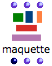

OpenMusic DocumentationHiérarchie de section : OM 6.6 User Manual > Maquettes > Maquettes in Patches > Functional Mode
OpenMusic DocumentationHiérarchie de section : OM 6.6 User Manual > Maquettes > Maquettes in Patches > Functional Mode
Navigation : page précédente | page suivante
Attention, votre navigateur ne supporte pas le javascript ou celui-ci à été désactivé. Certaines fonctionnalités de ce guide sont restreintes.
Functional Mode
Use
A maquette on "functional" mode can be compared to a function. This is especially significant when a maquette is to receive or to return values, from the inside of a patch or another maquette.
Procedure
When a maquette is added in a patch, it is by default on "build" mode, as show its dark blue inputs and outputs. To set a maquette box on "functional" mode, |

|

|
The maquette then shows only one "build" output. "Build" inputs disappear. When inputs and outputs are added from the maquette editor, they appear on the outside of the maquette as standard inputs and outputs. The "value" output remains visible in first position. |
Functionalities
 |
Functional inputs allow
|
The content of the maquette is not built from the patch, but used as a preexistent full-fledged function.
Example : Defining a Sequence from the Outside and Inside of the Maquette
In this example,a maquette is used inside a patch for building a sequence with three TemporalBoxes.
Organizing the Maquette
On one hand, a number of notes and an initial offset are defined from the outside of the maquette .
On the other hand
- pitches are determined by the vertical position of each box
- the successive offsets of the second and third box are calculated from inside the maquette .

- The first functional input of the maquette is assigned a number of notes and connected to the first input of a TemporalBox.
- The second functional input is assigned an offset – starting point in milliseconds – and connected to the second input of the TemporalBox.
- The output of the maquette can possibly send data from the TemporalBox to the outside of the maquette.
Programming TemporalBox #1
Values are returned to the functional inputs of the maquette to define a chord-seq in the TemporalBox.
- The "posy" is scaled from 5000 to 8000 by om-scale.
- The resulting pitch is repeated five times by repeat-n and returned to the chord-seq.
- The chord-seq box is connected to the Tempout : it is now the musical value of the TemporalBox.
- The offset of the TemporalBox is added to the onset of the chord-seq's last note, and returned to the functional output. This determines the position of the next box in the maquette.

Defining TemporalBoxes #2 and 3 and Evaluating the Maquette
TemporalBox #1 is duplicated to create two new TemporalBoxes, which are connected to each other and to the maquette inputs.

Completing the sequence
The same number of notes is returned by the first input of the maquette to all TemporalBoxes.
The ending offset value of a TemporalBox is connected to the second input of the next TemporalBox. Boxes follow each other in a temporal sequence.
Pitches match the vertical position of the boxes.
The ending offset calculated in TemporalBox #3 is returned to the functional output of the maquette. It can possibly be used for subsequent computations in the patch editor, or in another maquette.
Références :
Plan :
Navigation : page précédente | page suivante
A propos...(c) Ircam - Centre Pompidou